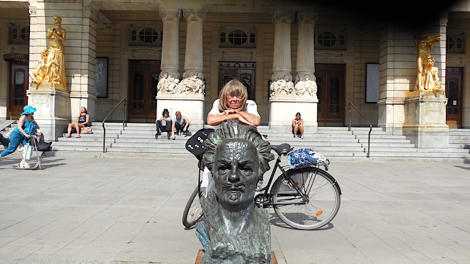
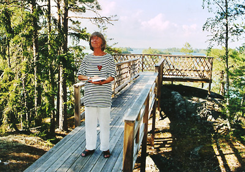

Vandringar
Att exempelvis tillsammans vandra genom den kända eller okända staden där författaren vandrat, där dikterna tillkommit, där dramat utspelar sig, ger nya perspektiv och berikar läsupplevelser och ”vardagsvandringar”.
Jag vet, då jag har vandrat med August Strindberg sedan 1981 varje vår, sommar, höst och till och med på vintern i snöyra.

År 2024 går vi följande programmerade vandringar oberoende av väder och vind.Vandringar kostar 100 kronor (exkl resor), där ej annat uppgivits.
Stadsvandringar
”Det var en afton i början av maj…”
 Inledningen av succéromanen ”Röda Rummet” – ett målande panorama över en älskad stad – är det mest kända av författarens Södermalm. Men här finns också Vita Bergen, Hornstull, Hornsgatan, Swedenborg och Bellman.
Inledningen av succéromanen ”Röda Rummet” – ett målande panorama över en älskad stad – är det mest kända av författarens Södermalm. Men här finns också Vita Bergen, Hornstull, Hornsgatan, Swedenborg och Bellman.
”När världen gjort bankrutt... då kanske!!”
Strindberg var mycket medveten om betydelsen av tidningsvärlden. Det var alltså logiskt att ha vände sig till pressen, framförallt arbetarpressen som tog emot med öppna armar, när han skulle utkämpa sin sista strid - Strindbergsfejden.”Morgonen har något med sig som ger ungdom i sinnet”
Vi vandrar Strindbergs morgonpromenad – möter människor på Drottninggatans ”trottoar”, viker av ”i Fredsgatans halvdunkel” och vidare genom den händelserika Kungsträdgården och ”löpgraven”, Arsenalsgatan, fram till ”en nationell bildningsanstalt” och ”Stockholms ungkarlsklubb”.”... vi råkas på något sätt, i Hvita Huset vid Nybroplan...”
Stockholm var under Strindbergs tid en mycket teatertät stad, där hans verk hade både jublande framgångar och kaotiska motgångar. Här var de omskrivna urpremiärerna på bland annat ”Mäster Olof och ”Ett drömspel”. Här presenterades den intima scenen samtidigt som filmen tog sina första stapplande steg.”Jag är icke; blott vad jag gjort, det är!”
Vandringen följer Strindbergs sista färd 19 maj 1912 från bostaden i Blå Tornet till graven på Norra kyrkogården ”icke i de rikas kvarter på fåfängans marknad” och passerar första hustruns grav. En vandring i försoningsdramat ”Stora Landsvägen”s texter.Utflykter
”O, du min grönskande ö, blomkorg i havets våg”
 Strindbergs sinnebild för skärgården kan välgrundat anses vara Kymendö, Hemsö. Hit flydde han i fadersuppror för att skriva och odla och för att njuta av samvaron med sin första familj och vänner. Vandringen över ön går i ”Hemsöbornas” texter och hus i författarens liv.
Strindbergs sinnebild för skärgården kan välgrundat anses vara Kymendö, Hemsö. Hit flydde han i fadersuppror för att skriva och odla och för att njuta av samvaron med sin första familj och vänner. Vandringen över ön går i ”Hemsöbornas” texter och hus i författarens liv.
”...en vacker lövstrand med bryggor... små italienska villor”

Furusund blev Strindbergs sista skärgårdsglädje, som satte många avtryck i hans litteratur. Här möter den legendariske skaparen av Furusund, samlaren Christian Hammer. Från glödande optimism till djupaste vemod sommarlevde författaren i hyrda rum eller hus – ensam eller med familj, släkt och vänner.”... allt under det jag rustar till en dikt om Silverträsket”
Strindberg återkom för några år 1889 till Sverige och tillbringar tre somrar på Runmarö. Vistelserna präglades av skilsmässan från första hustrun och oron för barnen men också av experiment, fantasifulla teorier och arbetslust.Om Anita Persson
Jag, Anita Persson, var, efter många års aktiviteter i Strindbergssällskapet, intendent på Strindbergsmuseet fram till 1994. Därefter är jag vida anlitad föreläsare/kåsör, vandrare och även skribent.

Jag är pedagog och "folkbildare" och anser att författare och deras texter inte enbart är till för att njutas av utan också för att användas i våra dagliga liv i med- som motgångar, för att fylla på tankar, fantasier och möjligheter – som energi – som kunskap – som erfarenhet.
Jag har också bland annat:
- föreläst på Grafiska sällskapet och i Nacka konstförening
- föreläst på Nobelmuseet om Strindberg och Svenska Akademien i samarbete med Iréne Lindh samt i samma ämne skrivit artikel till NEs nyhetssida
- föreläst om Strindberg och Albert Engström i Grisslehamn i Engströms ateljé
- föreläst på TV i anslutning till kollationeringen inför inspelningen av Peter Birros TV-film om den unge Strindberg
- mottagit DN På Stans ”känga” 1987
- varit samtalspartner och medverkande i inspelningarna av TVs program om personen Strindberg och Strindberg idag
- varit med och startat Strindbergssällskapets årsbok Strindbergiana och ingick 1985–1992 i dess redaktion
- varit redaktör och initiativtagare till antologin ”Ja, må han leva – 22 kvinnor från 11 länder skriver om Strindberg”
- besökt flera bibliotek, studieförbund, andra sammanslutningar och organisationer för att presentera boken, som även anmälts på Bok- och Biblioteksmässan i Göteborg
- planerat och deltagit i Dramatens poesihörna i samarbete med skådespelerskan Iréne Lindh, med bl a Strindberg och Ibsen, Strindberg och försvarsfrågan, Strindberg och kungamakt, Strindbergs Stockholm, Strindberg och Svenska Akademien, Strindberg och Linné, Strindberg och Intima Teatern, Strindberg och fredsfrågan, Strindberg och Dramatiska Teatern
- stadsvandrat med åtskilliga gymnasie- och vuxenskoleelever
- stadsvandrat och skärgårdsvandrat med fackliga organisationer, universitetsgrupper även från andra delar av Europa
- stadsvandrat med presumtiva teaterbesökare från Dramaten till Strindbergs Intima Teater
- lett flera studiecirklar – om enskilda böcker samt om Strindbergs tid och samhälle
- skrivit boken ”Vandra med Strindberg” – 12 vandringar i Stockholm och Stockholms skärgård samt i Strindbergs litteratur.
- presenterat August för invandrargrupper under titeln ”Varför talar man så mycket om August Strindberg?”
- återkommande kåserat för blivande läkare på Karolinska Sjukhuset
- väglett kanadensisk, svensk och engelsk TV i Strindbergs miljöer
- ”vandrat” i radioprogrammet ”Boktornet” i P1 tillsammans med skådespelaren Reine Brynolfsson
- planerat och genomfört Strindbergdagar och –kvällar för personal på mindre och större företag
- lunch- och middagsvandrat med födelsedagsbarn och deras gäster på väg till födelsedagsfesten
- stadsvandrat med väninnor för att stimulera smaklökarna inför lyxmiddag
- återkommande kåserat i Tegnérlunden för ”gammal” studentgrupp, som årligen har sillsexa i skuggan av Strindbergmonumentet
- guidat utflykter till Kymmendö med studenter från hela världen i samarbete med Svenska Institutet
- föreläst för studenter på Universitetet i Sofia, Bulgarien, om bla Strindberg och Ibsen, Strindbergs liv samt deltagit vid lanseringen av ny översättning av Röda Rummet
- föreläst på Svenska Ambassaden i Tokyo, Japan
- skrivit artiklar om bl a Strindberg och hans Stockholm i utländska skrifter
- skrivit recensioner
- fått ABF-Stockholms kulturpris
- planerat och deltagit i nio torsdagar i P4 under rubriken ”Strindbergs Stockholm”
- i anslutning till uppsättningen av Ett drömspel föreläst i Örebro, dels för inblandade på teatern vid kollationeringen och dels för presumtiv publik, samt skrivit bidrag i programmet
- planerat och deltagit i TVs program om Strindbergs liv och Strindberg i världen idag
- tilldelats Södermalms arbetarinstituts stipendium 2010
- föreläst på Stockholms Nation i Uppsala om ”Vad satte Uppsala för spår hos Strindberg?”
- föreläst ABF om Strindbergs civilisations- och systemkritik – ”Det går framåt – Ja, framåt – åt helvete!”
- föreläst i Umeå och Karlshamn om Strindberg och kvinnofrågan – ”Jag är endast teoretiskt kvinnohatare”
- föredragit ”Att läsa staden i vandring med August Strindberg” i Strassbourg
- vandrat med döv-stum-blinda i Strindbergs Stockholm
- vandrat med NHR Stockholm
- skrivit boken Vandra med Strindberg – fem vandringar i Stockholm
- deltagit vid Dalateaterns kollationering inför föreställningen av Hemsöborna
- tipsat TVs Babel-redaktion ang Strindbergsinfo
- Läsecirklar om ”Fröken Julie”, ”Ockulta dagboken” och Strindbergs liv
- Inlägg i anslutning till Strindberg-program med musik
- samtalat om Strindbergs hud med hudprofessor på Karolinska universitetsbiblioteket
- vandrat, föreläst och samtalat med herrar med medföljande inom några loger
- samtalat om Stockholmsboken 2012 ”En dåres försvarstal” på olika bibliotek
- agerat ”Braständare” till Stadsteaterns och Dalateaterns personal och publik
- agerat samtalsledare med regissörer och översättare för teaterpubliken på Stadsteatern
- agerat ”konsult” i anslutning till TV
- guidat i Stockholms skärgård med Strömma kanal och Blidösund
- vandrat med bl a Sandrewvännerna, Stockholms Landstings personal
-
mottagit Fosams folkbildningsstipendium 2012

- hållit läsecirklar om ”Fröken Julie”, ”Ockulta dagboken” och Strindbergs liv
- skrivit inlägg i anslutning till Strindberg-program med musik
- samtalat om Strindbergs hud med hudprofessor på Karolinska universitetsbiblioteket
- vandrat, föreläst och samtalat med herrar med medföljande inom några loger
- samtalat om Stockholmsboken 2012 ”En dåres försvarstal” på olika bibliotek
- mottagit Stockholms Stads högsta bemärkelse Sankt Eriks-medaljen
- agerat ”Braständare” till Stadsteaterns och Dalateaterns personal och publik
- agerat samtalsledare med regissörer och översättare för teaterpubliken på Stadsteatern
- agerat ”konsult” i anslutning till TV
- guidat i Stockholms skärgård med Strömma kanal och Blidösund